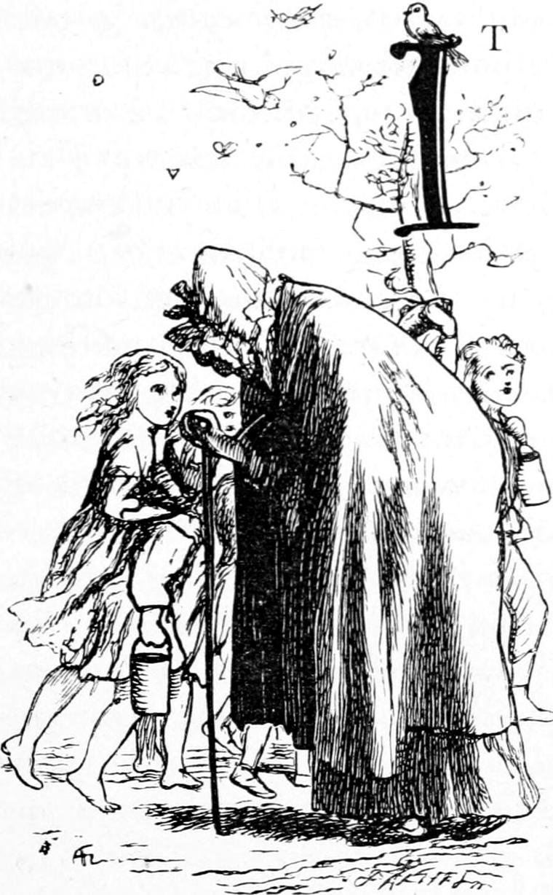
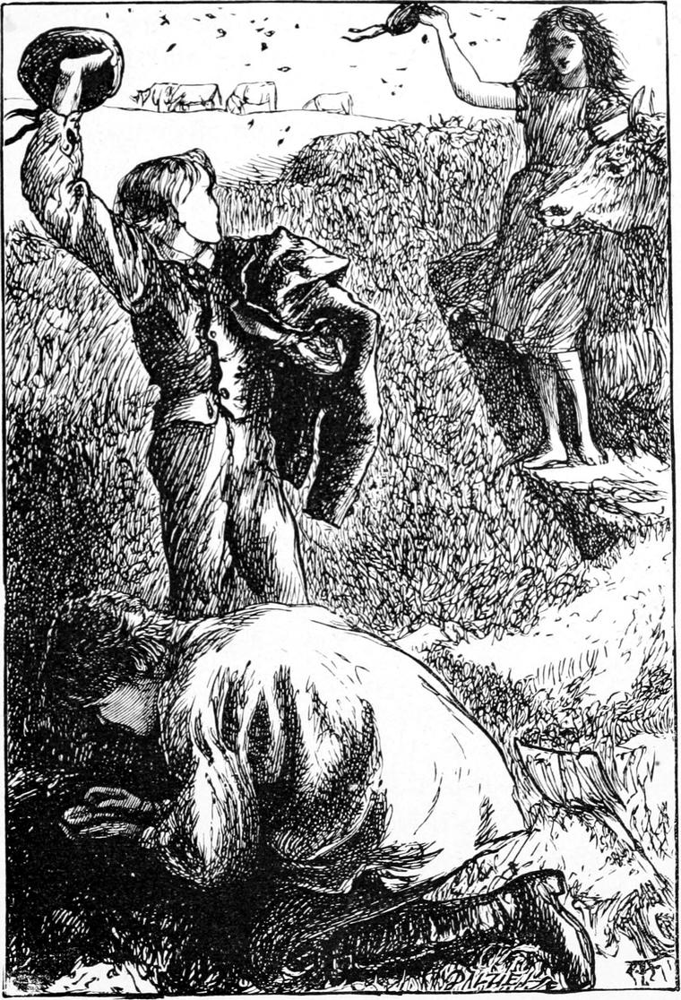

It was twelve o’clock on a delicious Saturday in the height of summer. We poured out of school with the gladness of a holiday in our hearts. I sauntered home full of the summer sun, and the summer wind, and the summer scents which filled the air. I do not know how often I sat down in perfect bliss upon the earthen walls which divided the fields from the road, and basked in the heat. These walls were covered with grass and moss. The odour of a certain yellow feathery flower, which grew on them rather plentifully, used to give me special delight. Great humble-bees haunted the walls, and were poking about in them constantly. Butterflies also found them pleasant places, and I delighted in butterflies, though I seldom succeeded in catching one. I do not remember that I ever killed one. Heart and conscience both were against that. I had got the loan of Mrs. Trimmer’s story of the family of Robins, and was every now and then reading a page of it with unspeakable delight. We had very few books for children in those days and in that far out-of-the-way place, and those we did get were the more dearly prized. It was almost dinner-time before I reached home. Somehow in this grand weather, welcome as dinner always was, it did not possess the same amount of interest as in the cold bitter winter. This day I almost hurried over mine to get out again into the broad sunlight. Oh, how stately the hollyhocks towered on the borders of the shrubbery! The guelder-roses hung like balls of snow in their wilderness of green leaves; and here and there the damask roses, dark almost to blackness, and with a soft velvety surface, enriched the sunny air with their colour and their scent. I never see these roses now. And the little bushes of polyanthus gemmed the dark earth between with their varied hues. We did not know anything about flowers except the delight they gave us, and I dare say I am putting some together which would not be out at the same time, but that is how the picture comes back to my memory.
I was leaning in utter idleness over the gate that separated the little lawn and its surroundings from the road, when a troop of children passed, with little baskets and tin pails in their hands; and amongst them Jamie Duff. It was not in the least necessary to ask him where he was going.
Not very far, about a mile or so from our house, rose a certain hill famed in the country round for its store of bilberries. It was the same to which Turkey and I had fled for refuge from the bull. It was called the Ba’ Hill, and a tradition lingered in the neighbourhood that many years ago there had been a battle there, and that after the battle the conquerors played at football with the heads of the vanquished slain, and hence the name of the hill; but who fought or which conquered, there was not a shadow of a record. It had been a wild country, and conflicting clans had often wrought wild work in it. In summer the hill was of course the haunt of children gathering its bilberries. Jamie shyly suggested whether I would not join them, but they were all too much younger than myself; and besides I felt drawn to seek Turkey in the field with the cattle—that is, when I should get quite tired of doing nothing. So the little troop streamed on, and I remained leaning over the gate.
I suppose I had sunk into a dreamy state, for I was suddenly startled by a sound beside me, and looking about, saw an old woman, bent nearly double within an old grey cloak, notwithstanding the heat. She leaned on a stick, and carried a bag like a pillow-case in her hand. It was one of the poor people of the village, going her rounds for her weekly dole of a handful of oatmeal. I knew her very well by sight and by name—she was old Eppie—and a kindly greeting passed between us. I thank God that the frightful poor-laws had not invaded Scotland when I was a boy. There was no degradation in honest poverty then, and it was no burden to those who supplied its wants; while every person was known, and kindly feelings were nourished on both sides. If I understand anything of human nature now, it comes partly of having known and respected the poor of my father’s parish. She passed in at the gate and went as usual to the kitchen door, while I stood drowsily contemplating the green expanse of growing crops in the valley before me. The day had grown as sleepy as myself. There were no noises except the hum of the unseen insects, and the distant rush of the water over the dams at our bathing-place. In a few minutes the old woman approached me again. She was an honest and worthy soul, and very civil in her manners. Therefore I was surprised to hear her muttering to herself. Turning, I saw she was very angry. She ceased her muttering when she descried me observing her, and walked on in silence—was even about to pass through the little wicket at the side of the larger gate without any further salutation. Something had vexed her, and instinctively I put my hand in my pocket, and pulled out a halfpenny my father had given me that morning—very few of which came in my way—and offered it to her. She took it with a half-ashamed glance, an attempt at a courtesy, and a murmured blessing. Then for a moment she looked as if about to say something, but changing her mind, she only added another grateful word, and hobbled away. I pondered in a feeble fashion for a moment, came to the conclusion that the Kelpie had been rude to her, forgot her, and fell a-dreaming again. Growing at length tired of doing nothing, I roused myself, and set out to seek Turkey.
I have lingered almost foolishly over this day. But when I recall my childhood, this day always comes back as a type of the best of it.
I remember I visited Kirsty, to find out where Turkey was. Kirsty welcomed me as usual, for she was always loving and kind to us; and although I did not visit her so often now, she knew it was because I was more with my father, and had lessons to learn in which she could not assist me. Having nothing else to talk about, I told her of Eppie, and her altered looks when she came out of the house. Kirsty compressed her lips, nodded her head, looked serious, and made me no reply. Thinking this was strange, I resolved to tell Turkey, which otherwise I might not have done. I did not pursue the matter with Kirsty, for I knew her well enough to know that her manner indicated a mood out of which nothing could be drawn. Having learned where he was, I set out to find him—close by the scene of our adventure with Wandering Willie. I soon came in sight of the cattle feeding, but did not see Turkey.
When I came near the mound, I caught a glimpse of the head of old Mrs. Gregson’s cow quietly feeding off the top of the wall from the other side, like an outcast Gentile; while my father’s cows, like the favoured and greedy Jews, were busy in the short clover inside. Grannie’s cow managed to live notwithstanding, and I dare say gave as good milk, though not perhaps quite so much of it, as ill-tempered Hawkie. Mrs. Gregson’s granddaughter, however, who did not eat grass, was inside the wall, seated on a stone which Turkey had no doubt dragged there for her. Trust both her and Turkey, the cow should not have a mouthful without leave of my father. Elsie was as usual busy with her knitting. And now I caught sight of Turkey, running from a neighbouring cottage with a spade over his shoulder. Elsie had been minding the cows for him.
“What’s ado, Turkey?” I cried, running to meet him.
“Such a wild bees’ nest!” answered Turkey. “I’m so glad you’re come! I was just thinking whether I wouldn’t run and fetch you. Elsie and I have been watching them going out and in for the last half-hour.—Such lots of bees! There’s a store of honey there.”
“But isn’t it too soon to take it, Turkey? There’ll be a great deal more in a few weeks.—Not that I know anything about bees,” I added deferentially.
“You’re quite right, Ranald,” answered Turkey; “but there are several things to be considered. In the first place, the nest is by the roadside, and somebody else might find it. Next, Elsie has never tasted honey all her life, and it is so nice, and here she is, all ready to eat some. Thirdly, and lastly, as your father says—though not very often,” added Turkey slyly, meaning that the lastly seldom came with the thirdly,—“if we take the honey now, the bees will have plenty of time to gather enough for the winter before the flowers are gone, whereas if we leave it too long they will starve.”
I was satisfied with this reasoning, and made no further objection.
“You must keep a sharp look-out though, Ranald,” he said; “for they’ll be mad enough, and you must keep them off with your cap.”
He took off his own, and gave it to Elsie, saying: “Here, Elsie: you must look out, and keep off the bees. I can tell you a sting is no joke. I’ve had three myself.”
“But what are you to do, Turkey?” asked Elsie, with an anxious face.

“Oh, Ranald will keep them off me and himself too. I shan’t heed them. I must dig away, and get at the honey.”
All things being thus arranged, Turkey manfully approached the dyke, as they call any kind of wall-fence there. In the midst of the grass and moss was one little hole, through which the bees kept going and coming very busily. Turkey put in his finger and felt in what direction the hole went, and thence judging the position of the hoard, struck his spade with firm foot into the dyke. What bees were in came rushing out in fear and rage, and I had quite enough to do to keep them off our bare heads with my cap. Those who were returning, laden as they were, joined in the defence, but I did my best, and with tolerable success. Elsie being at a little distance, and comparatively still, was less the object of their resentment. In a few moments Turkey had reached the store. Then he began to dig about it carefully to keep from spoiling the honey. First he took out a quantity of cells with nothing in them but grub-like things—the cradles of the young bees they were. He threw them away, and went on digging as coolly as if he had been gardening. All the defence he left to me, and I assure you I had enough of it, and thought mine the harder work of the two: hand or eye had no rest, and my mind was on the stretch of anxiety all the time.
But now Turkey stooped to the nest, cleared away the earth about it with his hands, and with much care drew out a great piece of honeycomb, just as well put together as the comb of any educated bees in a garden-hive, who know that they are working for critics. Its surface was even and yellow, showing that the cells were full to the brim of the rich store. I think I see Turkey weighing it in his hand, and turning it over to pick away some bits of adhering mould ere he presented it to Elsie. She sat on her stone like a patient, contented queen, waiting for what her subjects would bring her.
“Oh, Turkey! what a piece!” she said as she took it, and opened her pretty mouth and white teeth to have a bite of the treasure.
“Now, Ranald,” said Turkey, “we must finish the job before we have any ourselves.”
He went on carefully removing the honey, and piling it on the bank. There was not a great deal, because it was so early in the year, and there was not another comb to equal that he had given Elsie. But when he had got it all out—
“They’ll soon find another nest,” he said. “I don’t think it’s any use leaving this open for them. It spoils the dyke too.”
As he spoke he began to fill up the hole, and beat the earth down hard. Last of all, he put in the sod first dug away, with the grass and flowers still growing upon it. This done, he proceeded to divide what remained of the honey.
“There’s a piece for Allister and Davie,” he said; “and here’s a piece for you, and this for me, and Elsie can take the rest home for herself and Jamie.”
Elsie protested, but we both insisted. Turkey got some nice clover, and laid the bits of honeycomb in it. Then we sat and ate our shares, and chatted away for a long time, Turkey and I getting up every now and then to look after the cattle, and Elsie too having sometimes to follow her cow, when she threatened an inroad upon some neighbouring field while we were away. But there was plenty of time between, and Elsie sung us two or three songs at our earnest request, and Turkey told us one or two stories out of history books he had been reading, and I pulled out my story of the Robins and read to them. And so the hot sun went down the glowing west, and threw longer and longer shadows eastward. A great shapeless blot of darkness, with legs to it, accompanied every cow, and calf, and bullock wherever it went. There was a new shadow crop in the grass, and a huge patch with long tree-shapes at the end of it, stretched away from the foot of the hillock. The weathercock on the top of the church was glistening such a bright gold, that the wonder was how it could keep from breaking out into a crow that would rouse all the cocks of the neighbourhood, even although they were beginning to get sleepy, and thinking of going to roost. It was time for the cattle, Elsie’s cow included, to go home; for, although the latter had not had such plenty to eat from as the rest, she had been at it all day, and had come upon several very nice little patches of clover, that had overflowed the edges of the fields into the levels and the now dry ditches on the sides of the road. But just as we rose to break up the assembly, we spied a little girl come flying across the field, as if winged with news. As she came nearer we recognized her. She lived near Mrs. Gregson’s cottage, and was one of the little troop whom I had seen pass the manse on their way to gather bilberries.
“Elsie! Elsie!” she cried, “John Adam has taken Jamie. Jamie fell, and John got him.”
Elsie looked frightened, but Turkey laughed, saying: “Never mind, Elsie. John is better than he looks. He won’t do him the least harm. He must mind his business, you know.”
The Ba’ Hill was covered with a young plantation of firs, which, hardy as they were, had yet in a measure to be coaxed into growing in that inclement region. It was amongst their small stems that the coveted bilberries grew, in company with cranberries and crowberries, and dwarf junipers. The children of the village thus attracted to the place were no doubt careless of the young trees, and might sometimes even amuse themselves with doing them damage. Hence the keeper, John Adam, whose business it was to look after them, found it his duty to wage war upon the annual hordes of these invaders; and in their eyes Adam was a terrible man. He was very long and very lean, with a flattish yet Roman nose, and rather ill-tempered mouth, while his face was dead-white and much pitted with the small-pox. He wore corduroy breeches, a blue coat, and a nightcap striped horizontally with black and red. The youngsters pretended to determine, by the direction in which the tassel of it hung, what mood its owner was in; nor is it for me to deny that their inductions may have led them to conclusions quite as correct as those of some other scientific observers. At all events the tassel was a warning, a terror, and a hope. He could not run very fast, fortunately, for the lean legs within those ribbed grey stockings were subject to rheumatism, and could take only long not rapid strides; and if the children had a tolerable start, and had not the misfortune to choose in their terror an impassable direction, they were pretty sure to get off. Jamie Duff, the most harmless and conscientious creature, who would not have injured a young fir upon any temptation, did take a wrong direction, caught his foot in a hole, fell into a furze bush, and, nearly paralysed with terror, was seized by the long fingers of Adam, and ignominiously lifted by a portion of his garments into the vast aërial space between the ground and the white, pock-pitted face of the keeper. Too frightened to scream, too conscious of trespass to make any resistance, he was borne off as a warning to the rest of the very improbable fate which awaited them.
But the character of Adam was not by any means so frightful in the eyes of Turkey; and he soon succeeded in partially composing the trepidation of Elsie, assuring her that as soon as he had put up the cattle, he would walk over to Adam’s house and try to get Jamie off, whereupon Elsie set off home with her cow, disconsolate but hopeful. I think I see her yet—for I recall every picture of that lovely day clear as the light of that red sunset—walking slowly with her head bent half in trouble, half in attention to her knitting, after her solemn cow, which seemed to take twice as long to get over the ground because she had two pairs of legs instead of one to shuffle across it, dragging her long iron chain with the short stake at the end after her with a gentle clatter over the hard dry road. I accompanied Turkey, helped him to fasten up and bed the cows, went in with him and shared his hasty supper of potatoes and oatcake and milk, and then set out refreshed, and nowise apprehensive in his company, to seek the abode of the redoubtable ogre, John Adam.